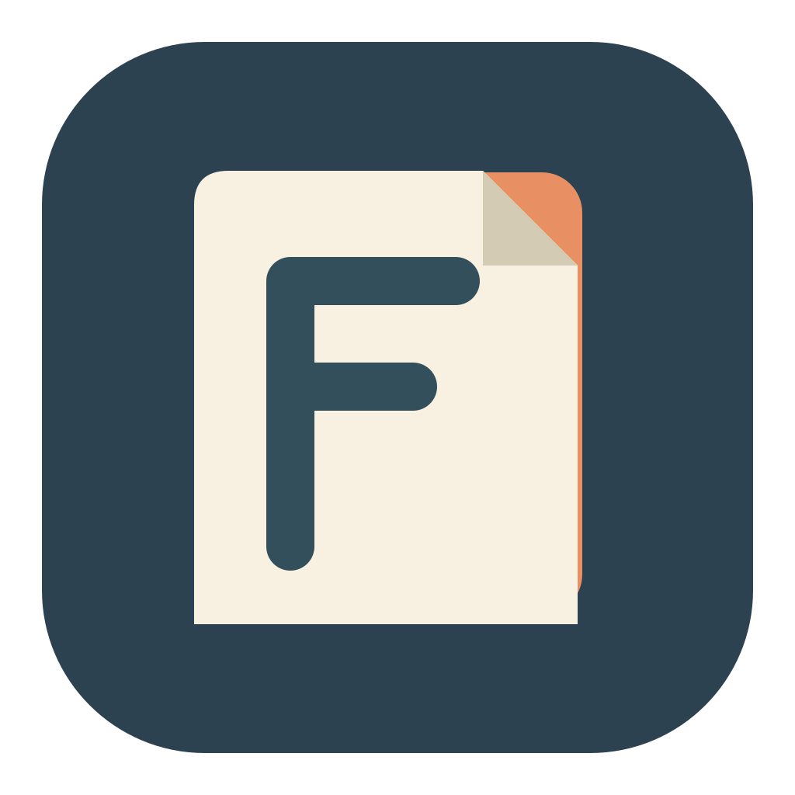

Open a PDF
Read and search text-based PDFs locally. Scanned pages need OCR before their text can be analyzed.

FolianceA Mac PDF reader · Preparing for the first release
Foliance helps you move from a long PDF to a clear, checkable picture of what it says. Choose on-device Apple Intelligence or connect your own OpenAI API key.
The app is being prepared for its first release. No download is available yet.
The supplier reports a delay. A revised date is not stated.
“The proposed budget is EUR 18,000. Delivery has been delayed.”
A steady reading flow
Start with the document, shape the reading around your goal, then check each interpretation against the original text.
Read and search text-based PDFs locally. Scanned pages need OCR before their text can be analyzed.
Use a profile or add a few topics and questions to focus the review. A reference document is optional.
Review linked source passages, add notes, save selected excerpts, and export the parts you need.
Four ways into a document
Profiles guide the review; they do not replace the document or turn an interpretation into a verified fact.
Find the main points and useful passages for a first read.
Trace findings, actions, costs, deadlines, and open questions.
Look across scope, decisions, dependencies, risks, and delivery.
Separate confirmed decisions, stated commitments, and proposals.
Your choice of AI
Use Apple Intelligence on your Mac, or select OpenAI API with your own API key. Foliance has no account system, advertising, analytics, or tracking.
OpenAI is optional. Before sending document content, Foliance explains what will be shared and asks for your consent. You can revoke that consent in Settings.
Read the privacy detailsAPPLE INTELLIGENCE · ON DEVICE
OPENAI API · YOUR OWN KEY
OpenAI API usage is billed by OpenAI, separately from Foliance and ChatGPT subscriptions. Model access depends on your API account. Reading, search, and saved work do not require cloud AI.